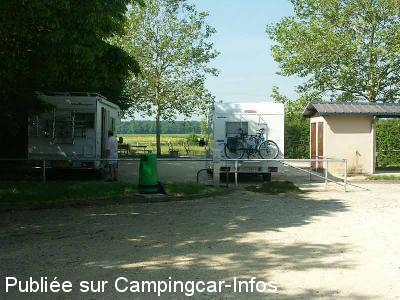
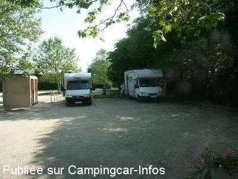

APN = Parking toléré jour/nuit de :
LEVET
(N° 754)
Accès/adresse :
Chemin du Crot Thibault
18340 LEVET
18340 LEVET
Latitude : (Nord) 46.92332° Décimaux ou 46° 55′ 23′′
Longitude : (Est) 2.40668° Décimaux ou 2° 24′ 24′′
Tarif : Gratuit
Services :

Table de pique-nique
Commerces
Autres informations :
Ouvert de mars à octobre
4 emplacements
Stationnement autorisé : 24 heures
Tel : +33(0)248 253 025

Le 08/06/2004 par

Le 08/06/2004 par Lexa
de
Campingcariste89
le 08/04/2014 :
De passage le 06 Avril 2014,je confirme les commentaires exprimés.L'aire de service est fermée.Il n'y a plus d'eau,plus d'accés aux WC,ni electricité.De
nombreux tags sur les murs des toilettes.Reste 2 ou 3 emplacements de stationnement.
De passage le 06 Avril 2014,je confirme les commentaires exprimés.L'aire de service est fermée.Il n'y a plus d'eau,plus d'accés aux WC,ni electricité.De
nombreux tags sur les murs des toilettes.Reste 2 ou 3 emplacements de stationnement.
de
Ruault
le 20/09/2013 :
Actuellement à Levet (18), je vous signale que l'aire de service de cette commune est définitivement fermée.
Actuellement à Levet (18), je vous signale que l'aire de service de cette commune est définitivement fermée.
de
leonard.michalon
le 06/07/2012 :
De passage hier soir, toujours dans le même état qu il y a 6 mois
Pas d eau , les batiments sont fermés
Lors de notre dernier passage les gouttières en zinc des toilettes et tuyau de cuivre avait été arrachés et dans un état lamentable.
Je pense que la commune ne va pas réinvestir pour faire plaisir aux vandales et voleurs de métaux
Dommage pour les Camping caristes
De passage hier soir, toujours dans le même état qu il y a 6 mois
Pas d eau , les batiments sont fermés
Lors de notre dernier passage les gouttières en zinc des toilettes et tuyau de cuivre avait été arrachés et dans un état lamentable.
Je pense que la commune ne va pas réinvestir pour faire plaisir aux vandales et voleurs de métaux
Dommage pour les Camping caristes
de
Ramacciotti Catherine
le 27/07/2011 :
Bonjour,
Je m'y suis arrêtée une fois, en effet c'est une aire très agréable à 2 camping-car, 3 c'est trop serré, on a m'impression d'être chez le voisin.
Bonjour,
Je m'y suis arrêtée une fois, en effet c'est une aire très agréable à 2 camping-car, 3 c'est trop serré, on a m'impression d'être chez le voisin.
de
Lexa
le 30/05/2004 :
Belle aire, mais pas de possibilité de vidanger les eaux grises, ni noires... 3 emplacements prévus (très serrés) à 2 CC, c'est royal. Dommage que le parking à proximité soit limité à 2 mètres. Par contre parking possible au centre ville, sauf le vendredi, jour de marché.
Belle aire, mais pas de possibilité de vidanger les eaux grises, ni noires... 3 emplacements prévus (très serrés) à 2 CC, c'est royal. Dommage que le parking à proximité soit limité à 2 mètres. Par contre parking possible au centre ville, sauf le vendredi, jour de marché.